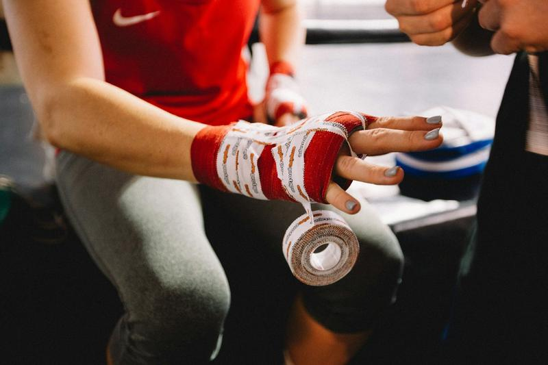

1:1 Coaching
One on One Coaching With Victor Pierantoni
In one on one coaching with Victor, you bring a situation you want to approach differently and work through it in conversation. Victor's questions examine your response and the assumptions shaping it; you consider what you want to do next.
Apply for 1:1 CoachingThe offer is for founders, business owners and adult athletes. Bring a decision, a difficult conversation or a performance concern that matters in your life. Sessions take place online, and all coaching members receive Circle access.
Start With Something Specific
For a founder, that could be a decision that keeps reopening or a conversation with someone you lead. You might want to understand why you avoid giving direct feedback, or what makes it difficult to trust someone with a responsibility. For an athlete, it could be pressure before competing, attention caught on a mistake or the demands of a changing sporting career.
Personal and professional priorities can overlap. Describe where a business or sporting goal competes with a relationship, rest or enjoyment of what you do, and which part you want to examine with Victor.
When productivity is the concern, describe the work you want to finish and why it matters. A useful starting question is which action would serve that goal, given your other responsibilities and the time you have.
Read the focus of founder coaching or coaching for adult athletes.
What Can One on One Coaching Help You Examine?

Victor asks questions about what happened, how you interpret it and what you want from the conversation. His work can also include attention to feelings and bodily sensations. These are examples from his coaching and teaching, not a fixed script for every session.
A practical focus could be identifying a question to ask before deciding, checking an assumption or choosing an action to try. A chosen action is something you can do; the eventual business, personal or sporting result depends on more than a session.
You can learn from an action you choose by comparing what you expected with what happened. For example, after a difficult conversation, note what you said, how the other person responded and which assumption you would check next time.
See the session examples and approachYou Can Begin With an Unresolved Question
As a starting point, describe what happened, what you keep returning to and what you would like help thinking through. You do not need to arrive with an answer.
Illustration: if you keep revisiting a decision, a useful focus could be distinguishing information you still need from an assumption you are making. That gives the conversation a specific question to examine.
Work With Victor Online
Coaching sessions take place online. All coaching members receive Circle access alongside their 1:1 work with Victor.
Apply, Meet Victor, Then Decide
- Apply: describe the situation you want to work on and what you would like to be different.
- Discovery call: the next step is a Zoom conversation with Victor to explore whether coaching is a fit. There is no obligation to proceed with coaching.
- Your decision: if you choose to begin coaching, the work takes place online and coaching members receive Circle access.
Victor's public background includes martial arts and founding Zen Stoic. In his public interviews, he discusses attention, stillness and the questions people bring to their lives. Read Victor's background and dated interview references when considering whether the reflective approach described here fits your needs.
Coaching and Professional Advice
Reflective coaching examines how you interpret and respond to a situation. Training teaches a skill through instruction and practice; a mentor offers guidance informed by experience in a relevant field. If you need someone to teach a sporting technique or advise on a business decision itself, check that person's relevant expertise. Different kinds of help can address different parts of the same concern.
Liberation Coach's services are educational. A mental health concern, injury or specialist business question may require the appropriate qualified professional. Coaching does not replace medical, psychological, legal or financial advice, and specific outcomes are not guaranteed.
Apply for 1:1 Coaching With Victor
Tell Victor what you would like to explore. Your next step is a discovery Zoom call with him, with no obligation to proceed with coaching.
Apply for 1:1 Coaching